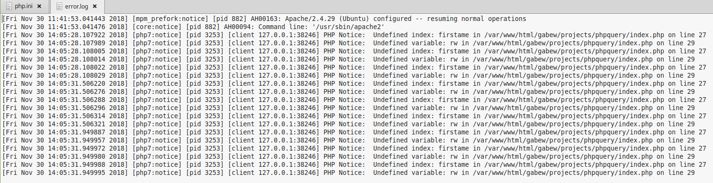

Gabe W. / P4A / 30 November 2018
PHP Errors On:
To turn errors on for development, I first put phpinfo(); into my code
Then, I looked in its display to find the path for the php.ini file
Next, I edited this php.ini file to ensure the 3 circled fields were ON


Lastly, I found the error log to check for any errors that would now be reported
Here's an example of what some php errors may look like in the log
